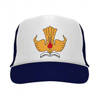
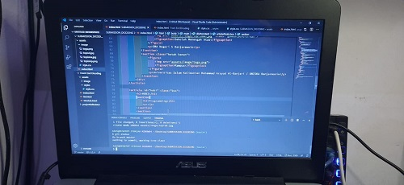
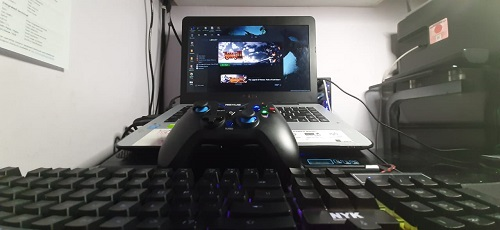

Webiste Submission untuk kelas Belajar Dasar Pemrograman Web di
"Dicoding"
Made by : Muhammad Dio Syahputra
TENTANG SAYA
Haloo , Perkenalkan nama saya Muhammad Dio Syahputra bisa dipanggil Dio.
Saya lahir pada tahun 1999 di Banjarmasin dan sampai sekarang masih tinggal bersama
orang tua saya, saya merupakan anak ke-2 dari 3 bersaudara dan saat ini saya kuliah
di kampus swasta banjarmasin dengan jurusan "Sistem Informasi" dan sudah memasuki
Semester 6. Harapan saya di belajar di Dicoding ini supaya dapat mempelajari hal-hal baru dan
juga sambil menentukan arah tujuan bahasa apa yang akan dikuasai nantinya.
PENDIDIKAN
Sekolah Dasar
SD Kartika V-6
Banjarmasin

Sekolah Menengah Pertama
SMP Negeri 3
Banjarmasin
Sekolah Menengah Atas
SMA Negeri 5
Banjarmasin
Kampus
Universitas
Islam Kalimantan Muhammad Arsyad Al-Banjari / UNISKA Banjarmasin
HOBI
Programming

Hobi pertama saya yaitu programming, saya menyukai hal-hal yang berhubungan
dengan logika sejak SMA dan inilah mengapa saya memilih jurusan sistem Informasi.
Programming sangat membuat saya sangat tertantang dalam berpikir dan saya menyukai hal tersebut
karena membuat saya dapat belajar hal baru dari semua kesalahan yang pernah saya dapat di
hobi ini. Saya menyukai Web programming dan pemrograman mobile.
Gaming

Hobi kedua saya "Gaming", dari sd sampe sekarang masih menyukai hobi ini walaupun pas sudah
masuk ke dunia perkuliahan waktu untuk main game sangat saya kurangi supaya bisa fokus dengan
hal seputar dunia perkuliahan. Mungkin selang selin aja sih antara programming dan gaming.
apabila dah terlalu stress dengan logika maka akan pindah sebentar ke game guna melepas stress
di pemrograman. Genre game yang disukai JRPG, story wise, adventure.
FUTURE PLAN
Rencana masa depan : berharap dapat membuat dan lebih menguasai pemrograman web dan
pemrograman mobile. saya janji akan terus ikut kelas-kelas yang ada di dicoding supaya
dapat meningkatkan skill yang ada dan belajar ilmu-ilmu baru yang tersedia di dicoding
dan sambil menabung buat membeli buku yang dijual di dicoding.